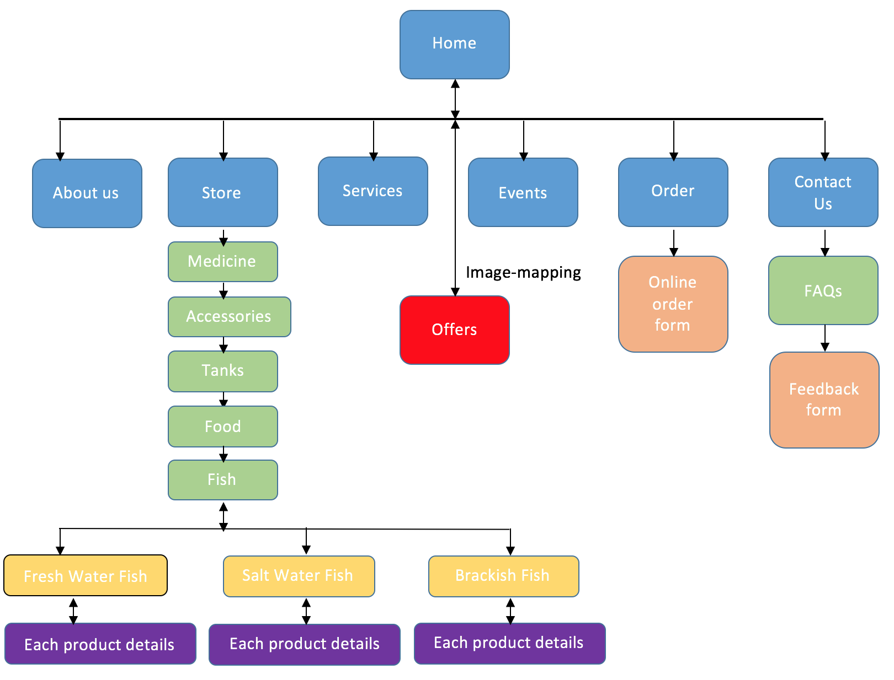

CP1406 - Assignment 2 - Project Plan - Milestone 2- Fish-tastic
Group Members:
Akash Gupta(JC429861)
Varun Bhaskar
Gunraj Singh
Goals
To create/redevelop a website for client Fish-tastic. The main objective of the website is to promote the client's business and provide information about the products and services provided by the client to the customers. the website is should also provide a e-commerce trading platform where the customers can book services and buy products from client online .
Success Evaluation
Less enquiries on phone from customers because all the details will be available on website like FAQ's, product description, map integeration for finding the store easily.
Increase in number of customers joining events hosted by client.
Increase in number of customers visiting website, like increase in web - traffic.
Increase in the number of sale of the products provided by the client through website.
Increase in the number of bookings for veterian through wesbite.
Customers can now provide feedbacks and evaluation can be measured with less complaits from customers.
Target Audience
We aim target all age groups but mostly 10-50 years old. We are targeting all audience type because we provide products and services for each one of them.
The products for our audience groups:
Children: We have small fish bowls and fishes, so parents can buy there children their owm personal pet
Family/small business: We have small to medium size aquarium tank depending on the size and need of the family or business
Corporate business: We also provide large tanks and also help with the intallation for the big businesses as maitaining a fish aquarium symbolizes the company status.
Services: We help with installtion and also provide after sale services like cleaning tanks, veterian who is alvaible at the store and also provide with doorstep service with flexible timmings.
Site Flowchart (Structure Diagram)

GitHub Repository
https://github.com/akash30g/m1.git